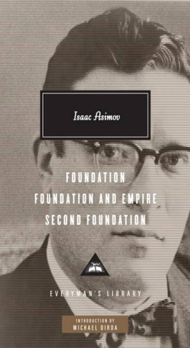
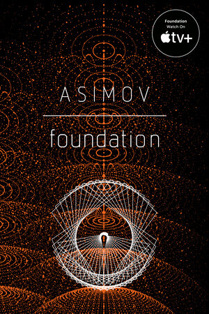
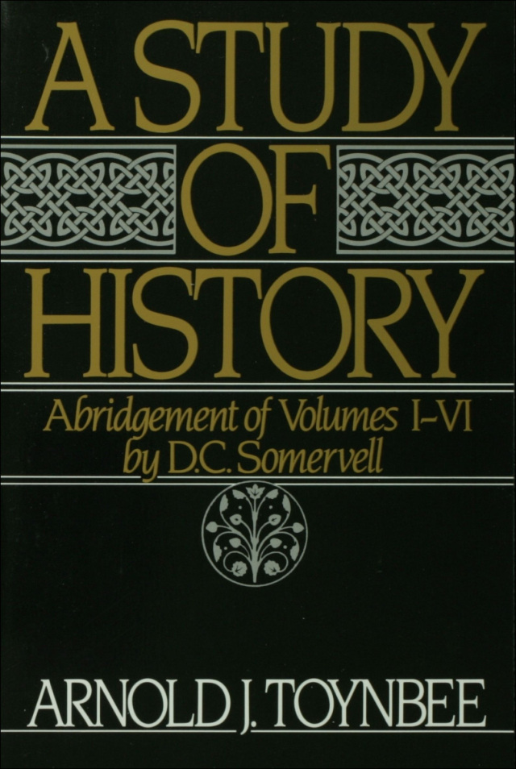
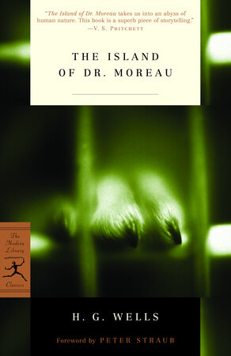
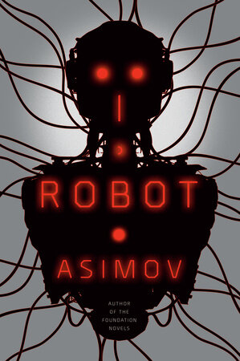
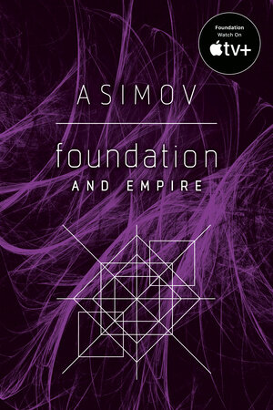

1:01:05 · 13 OPERE
La Fondazione di Asimov può ancora dirci qualcosa?
Il filo del discorso
La trilogia della Fondazione viene letta come documento dell’immaginario storico e scientifico del Novecento. Il relatore parte dal valore dei libri come testimonianze del loro tempo e critica una specializzazione che separa letteratura, filosofia, storia e società. Un lungo confronto con televisione e industria culturale prepara la domanda centrale: la conoscenza consente di comprendere gli esseri umani oppure può diventare uno strumento per orientarli e governarli? La psicostoria di Hari Seldon, che nella finzione tratta statisticamente grandi popolazioni, è interpretata dal relatore attraverso il determinismo, la predestinazione e le teorie della propaganda. Gibbon, Toynbee e Wells compongono lo sfondo di questa lettura; il Mulo, Salvor Hardin e l’educazione tecnica dei sacerdoti-scienziati offrono esempi diversi di persuasione e potere. La discussione arriva ai dati, ai modelli predittivi e alla differenza fra sapere teorico e addestramento operativo, per poi aprire una digressione sullo statuto filosofico dei numeri. Il giudizio sul valore letterario e politico di Asimov rimane dichiaratamente critico e appartiene al relatore. La scheda distingue tale interpretazione dalla trama: il Mulo mette in crisi il piano di Seldon e la psicostoria non predice la singola persona. I paralleli con la politica e con le vaccinazioni sono analogie polemiche del discorso, prive del valore di dimostrazioni storiche o sanitarie.
I libri nel discorso

Trilogia della Fondazione (Foundation Trilogy)
Copertina: Everyman’s Library · omnibus inglese · 2010
Copertina autentica dell’omnibus dei tre romanzi, con introduzione di Michael Dirda. Non è la copertina del solo primo volume e non identifica l’esemplare usato nel video.
I primi tre libri e la trilogia della Fondazione sono espliciti fin dall’apertura.
Passaggio 0:13 ↗ · Fonti e libro ↗
Foundation
Copertina: Del Rey, edizione tascabile, 2008
Copertina di Foundation, primo romanzo del ciclo; non è la copertina di un omnibus. Edizione scelta come riferimento iconografico; nessuna edizione è confermata nel video.
Il relatore passa al primo libro della trilogia e ne discute Hari Seldon, Hardin e Dorwin.
Passaggio 7:40 ↗ · Fonti e libro ↗La cittadella
Copertina: Bompiani · traduzione di Maurizio Bartocci · 2019
Copertina dell’edizione Bompiani 2019 verificata sul catalogo dell’editore; fotografia distribuita da IBS. L’edizione del video non è identificata.
La trasmissione della Cittadella è richiamata come adattamento da un libro; opera letteraria distinta dallo sceneggiato.
Passaggio 19:53 ↗ · Fonti e libro ↗Via col vento
Copertina: BUR · traduzione di Ada Salvatore ed Enrico Piceni · 2020
Copertina dell’edizione BUR 2020 verificata sul catalogo editoriale; immagine distribuita da IBS. Nessuna edizione attribuita al filmato.
Via col vento è nominato come produzione derivata da un libro; nessuna edizione specificata.
Passaggio 20:04 ↗ · Fonti e libro ↗
The History of the Decline and Fall of the Roman Empire
Cofanetto dei volumi 1–3: Decline and Fall, Gibbon: Everyman, 16 settembre 1993, cofanetto dei volumi 1–3, 1952 pagine secondo l’editore. Opera originale pubblicata nel 1776–1788.
Fotografia ufficiale del cofanetto Everyman dei primi tre volumi, con immagine di rovine e dorsi bianchi e neri. Non è presentato come l’opera completa né come l’edizione letta dal relatore.
Gibbon e il declino e la caduta dell’Impero romano sono espliciti.
Passaggio 24:01 ↗ · Fonti e libro ↗
A Study of History
Copertina: Oxford University Press · riduzione di D. C. Somervell, volumi I–VI · edizione 1987 / ebook
Copertina della riduzione dei volumi I–VI di D. C. Somervell, non dell’intera opera originale in dodici volumi. Immagine della versione digitale ISBN 9780199826698; ISBN cartaceo 9780195050806. Edizione del video non identificata.
Arnold Toynbee e Study of History sono pronunciati nella discussione delle civiltà.
Passaggio 25:01 ↗ · Fonti e libro ↗
La macchina del tempo
Copertina: Feltrinelli · Universale Economica, I classici
Titolo nominato tra le opere di Wells.
Passaggio 25:45 ↗ · Fonti e libro ↗
La guerra dei mondi (The War of the Worlds)
Copertina: Feltrinelli, Universale Economica I Classici, 2023, traduzione e cura di Mirko Esposito, 288 pagine; edizione di riferimento.
Immagine autentica dell’opera, controllata visivamente; l’edizione di riferimento non è attribuita al filmato.
Titolo nominato tra le opere di Wells.
Passaggio 25:50 ↗ · Fonti e libro ↗
L’isola del dottor Moreau
Copertina: Modern Library · edizione inglese · 2002
Copertina autentica dell’edizione inglese, con prefazione di Peter Straub. Nessuna edizione attribuita al video.
Titolo riconoscibile nella trascrizione automatica come isola del dottor Moro; autore e contesto consentono l’identificazione.
Passaggio 25:53 ↗ · Fonti e libro ↗
Io, robot (I, Robot)
Copertina: Del Rey · edizione inglese · 2008
Copertina autentica della raccolta di racconti, non del film. Nessuna edizione attribuita al video.
I, Robot è nominato nel discorso sui racconti e le tre leggi della robotica.
Passaggio 29:50 ↗ · Fonti e libro ↗
Foundation and Empire (Fondazione e Impero)
Copertina: Del Rey · edizione inglese · 2008
Copertina autentica del secondo volume, scelta come riferimento indipendente. L’edizione del filmato non è confermata.
Il secondo volume è richiamato per il tema della marionetta; titolo Foundation and Empire esplicito a 3305 secondi.
Passaggio 37:38 ↗ · Fonti e libro ↗
1984
Copertina: Newton Compton · edizione illustrativa
1984 di Orwell è nominato e Winston Smith viene accostato al convertito del Mulo.
Passaggio 38:37 ↗ · Fonti e libro ↗
La Repubblica
Identificazione probabile
Copertina: Laterza · La Repubblica · edizione con testo a fronte di riferimento
Immagine associata all’ISBN di riferimento e controllata visivamente; edizione e traduzione non identificate come quelle citate o lette nel video.
La caverna e le catene sono un’allusione riconoscibile al libro VII della Repubblica; titolo non pronunciato.
Passaggio 53:40 ↗ · Fonti e libro ↗